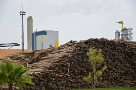
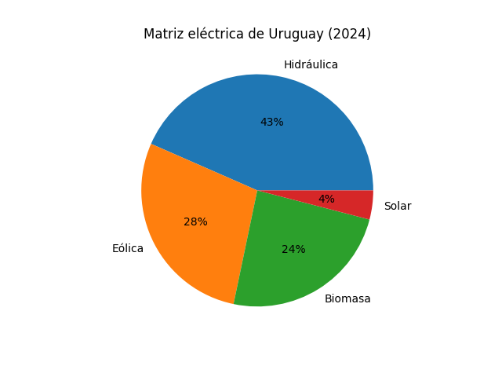
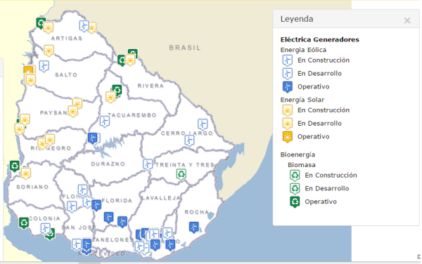

Energía renovable a partir de materia orgánica

La biomasa es materia orgánica de origen vegetal o animal que puede utilizarse como fuente de energía. Generalmente son utilizados residuos de producción agraria, forestal, la pesca, etc. En general, se define como la totalidad de los residuos de procedencia biológica que puedan ser procesados y utilizados en la producción de energía.
En Uruguay, los datos de la matriz eléctrica reportaron un 24% del total eléctrico producido proveniente de biomasa, un 43% mayor al año anterior y poniendo a Uruguay como el país con mayor participación relativa de energía de la biomasa en su sistema eléctrico a nivel global.

La conversión de la biomasa en energía o productos derivados puede llevarse a cabo mediante distintos procesos de carácter térmico y biológico. Entre ellos, la combustión directa constituye uno de los métodos más utilizados, ya que permite obtener calor y electricidad a partir de la quema controlada de la materia orgánica.
La gasificación representa otra alternativa relevante, mediante la cual la biomasa es transformada en un gas combustible, conocido como gas de síntesis, que puede emplearse tanto en la generación de energía eléctrica como en la producción de biocombustibles.
También existe la pirólisis, la descomposición térmica de la biomasa en ausencia de oxígeno, dando lugar a la obtención de fracciones sólidas, líquidas y gaseosas.
Por último, la digestión anaerobia corresponde a un proceso biológico en el que microorganismos degradan la materia orgánica sin presencia de oxígeno, generando biogás.
La biomasa puede clasificarse según su origen en diferentes categorías. En primer lugar, se encuentra la biomasa natural, que proviene de ecosistemas sin intervención humana significativa. En segundo lugar, la biomasa residual incluye los desechos generados por actividades agrícolas, forestales, industriales y urbanas. Finalmente, existen los cultivos energéticos, que son plantaciones específicamente destinadas a la producción de biomasa con fines energéticos.
El uso de biomasa como fuente energética presenta múltiples beneficios. En primer lugar, se trata de una fuente renovable, ya que los recursos pueden regenerarse en plazos relativamente cortos. Además, permite valorizar residuos que de otro modo serían desechados, contribuyendo a una gestión más eficiente de los mismos.
Otro aspecto relevante es su contribución a la reducción de emisiones de gases de efecto invernadero, especialmente cuando sustituye a combustibles fósiles. Asimismo, la biomasa puede producir energía de forma continua, a diferencia de otras fuentes renovables que dependen de condiciones climáticas, lo que la convierte en una opción estable dentro de la matriz energética.
A pesar de sus ventajas, la biomasa también presenta algunas desventajas. En primer lugar, su uso puede generar emisiones contaminantes si no se utilizan tecnologías adecuadas.
Además, requiere grandes cantidades de materia orgánica, lo que puede dificultar su producción a gran escala y aumentar los costos de transporte y almacenamiento.
En algunos casos, la producción de biomasa puede competir con la producción de alimentos, lo que representa un problema si no se gestiona correctamente.

La biomasa es una fuente de energía renovable que permite aprovechar residuos orgánicos para generar electricidad y calor. Su desarrollo ha sido importante en países como Uruguay, donde forma parte de la matriz energética.
Sin embargo, su uso debe ser controlado y bien gestionado para evitar impactos negativos. En general, representa una alternativa viable frente a los combustibles fósiles.